01. 소행성의 발견
왜 ‘소행성’이라고 불렀는지 알아보기
학습목표
1소행성이 무엇인지 알고, 소행성 발견의 역사를 설명할 수 있다.
2실제 관측 자료에서 소행성의 밝기 변화를 읽고, 그 원인에 대한 가설을 세울 수 있다.
1781년, 음악가 허셜
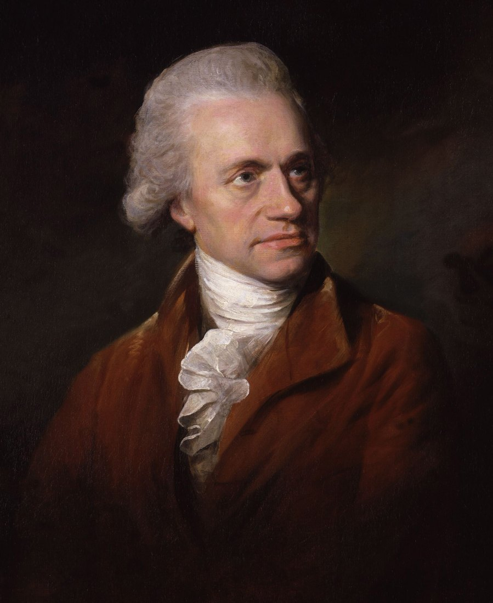
교회 오르간 연주자였던 윌리엄 허셜은 밤하늘을 좋아해 망원경을 직접 만들었다.
1781년 3월 13일, 그의 망원경에 별보다 조금 큰 원반이 들어왔다.
망원경으로 찾은 첫 행성 천왕성
행성 사이의 빈자리
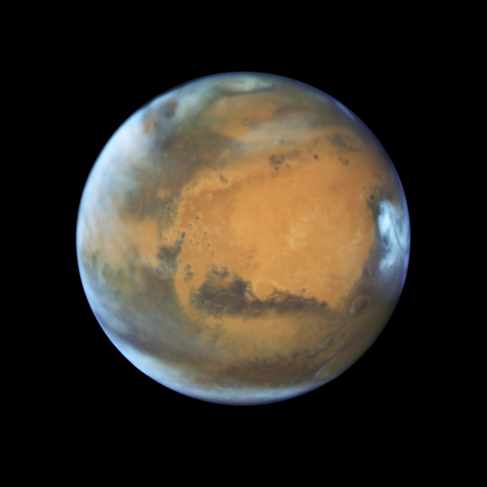
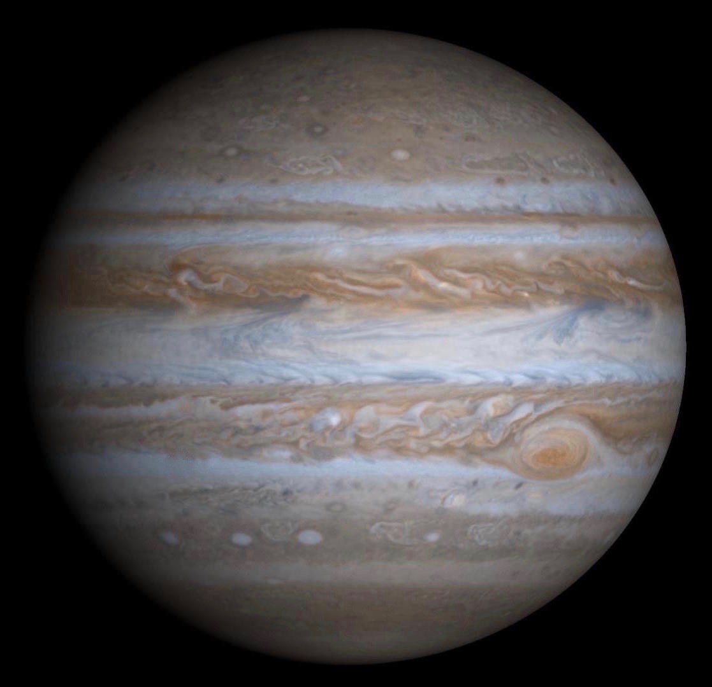
행성까지의 거리에 규칙이 있다고 보았고(티티우스–보데 규칙), 천왕성도 그 규칙에 들어맞았다.
화성과 목성 사이의 빈자리에는 무엇이 있을까?
1800년, 하늘 경찰
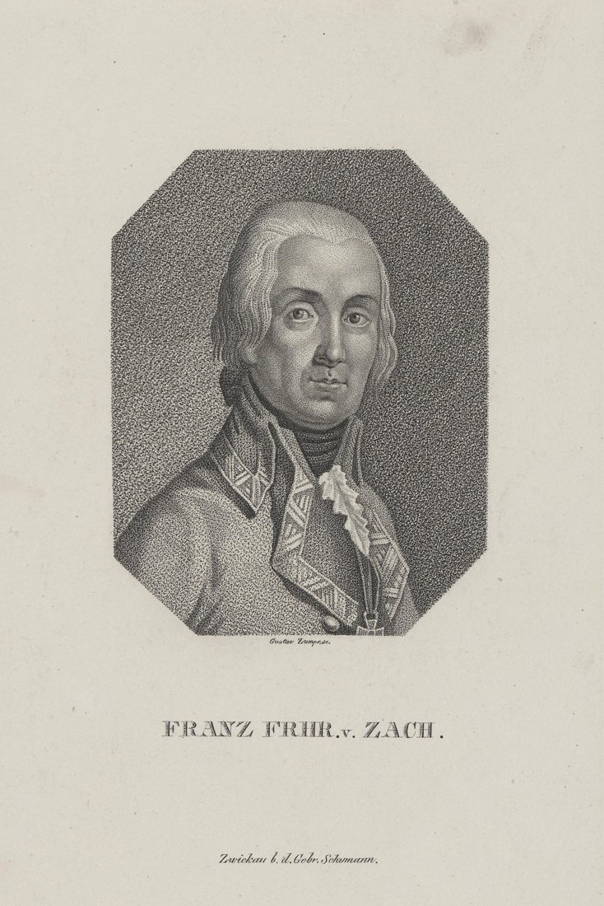
프란츠 폰 차흐는 빈자리에 숨은 행성이 있다고 믿었다.
유럽의 천문학자들이 하늘을 구역별로 나누어 맡아 찾기로 했다. 사람들은 이 모임을 ‘하늘 경찰’이라고 불렀다.
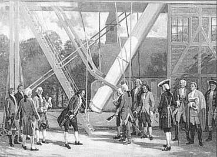
1801년 1월 1일, 피아치

시칠리아 팔레르모의 수도사 주세페 피아치는 별 수천 개의 위치를 하나하나 재어 목록을 만들고 있었다.
새해 첫날 밤 지도에 없는 별 하나를 적었다. 다음 날 밤, 그 별은 자리를 옮겨 있었다.
혜성이라고 하기에는 꼬리가 없었다
사라진 별을 다시 찾다

피아치가 병으로 관측을 멈춘 사이 그 별은 태양 빛 속으로 사라졌다.
스물네 살 수학자 가우스가 41일치 기록으로 궤도를 계산했고, 1801년 12월 31일 그 별을 다시 찾았다.
태양에서 2.77 AU, 빈자리의 천체 세레스
1802년, 올베르스와 팔라스
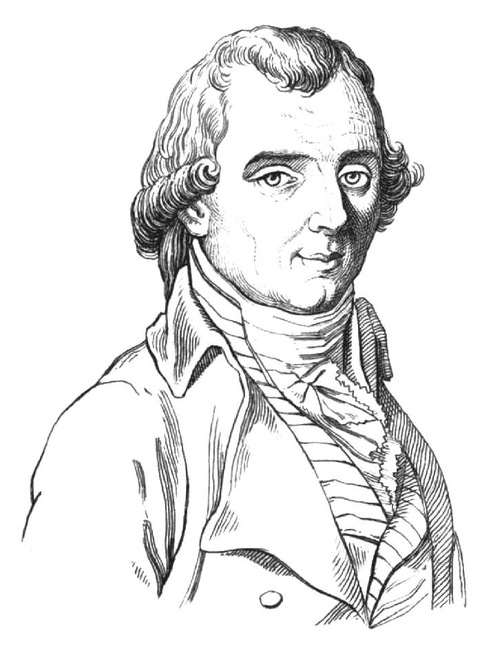
낮에는 의사, 밤에는 집 위층에서 혜성을 쫓던 올베르스가 세레스 근처에서 또 하나의 움직이는 별을 찾았다.
빈자리는 하나인데 천체는 둘
이 천체들도 행성일까?
탐사선이 본 소행성


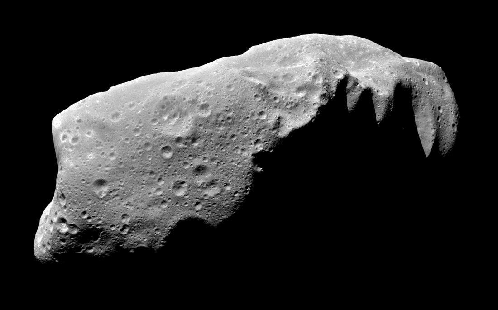
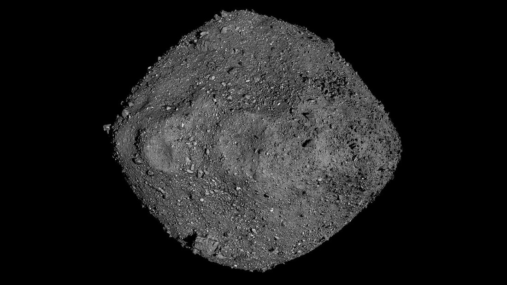
네 천체를 비교해 공통점과 차이점을 모둠별로 찾아보기 · 크기와 모양 사이에 어떤 관계가 있을까?
소행성이란
망원경으로 보아도 원반이 아닌 점 → 허셜이 붙인 이름 asteroid(별을 닮은 것), 우리말 소행성
탐색에서 찾은 것과 맞춰 보기
· 태양 주위를 도는 행성보다 작은 천체, 대부분 화성과 목성 사이
· 작을수록 울퉁불퉁하고, 스스로 돈다
· 세레스처럼 둥근 것은 2006년부터 왜소행성
1898년, 지구에 다가오는 소행성
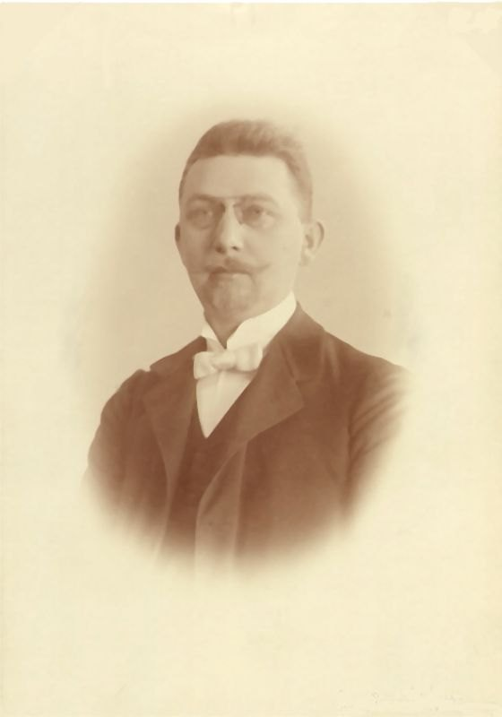
베를린 우라니아 천문대의 구스타프 비트가 사진 건판에서 빠르게 움직이는 천체를 찾았다.
지구 궤도 가까이 다가오는 첫 소행성, 에로스
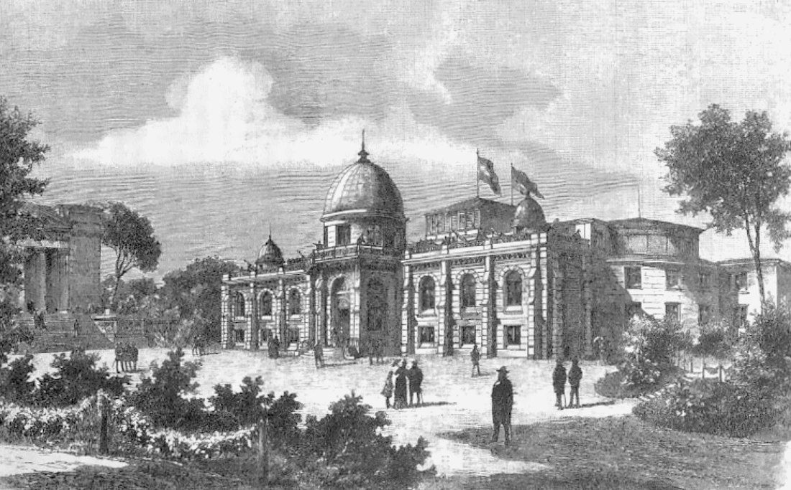
1901년, 밝기가 변하는 소행성
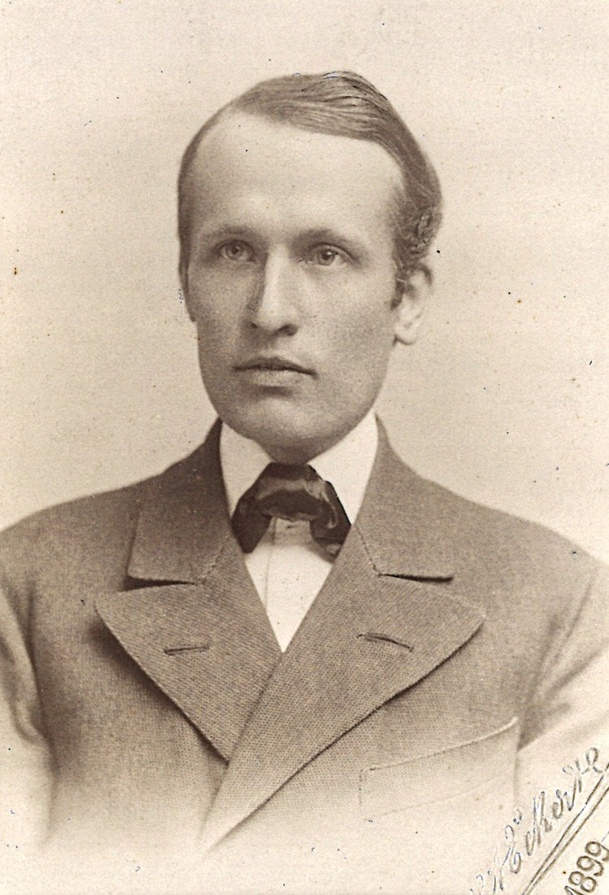
천문학자 에곤 폰 오폴처가 발표했다.
“에로스의 밝기가 몇 시간 만에 한 등급 가까이 변한다.”
점으로만 보이는 소행성의 밝기는 왜 변할까?
세 가지 가설
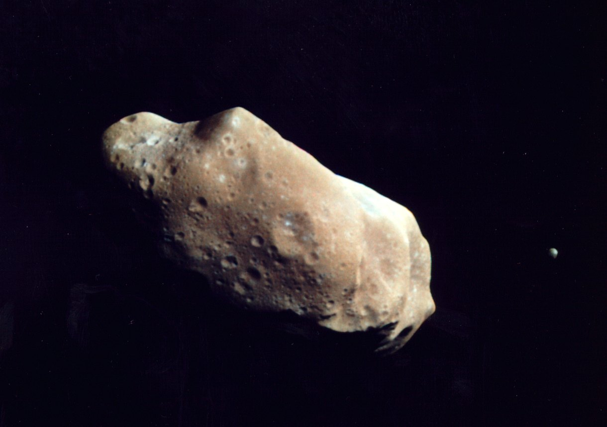
한 바퀴 도는 동안 몇 번 밝아질까? → 탐구 시뮬레이터에서 확인하기
1975년 1월 23일 밤의 기록
에로스가 지구에 2,260만 km까지 다가온 밤, 천문학자들이 6시간 동안 밝기를 쟀다.
기록 146점
DAMIT(체코 카렐대학교) 공개 자료 · CC BY 4.0
탐구 시뮬레이터에서 직접 재기
탐구 시뮬레이터
하룻밤 기록 재기
꼭대기 수, 간격, 변하는 모양
세 가설 모형 돌리기
관측과 맞는 가설 고르기
자전주기 예측
근거와 함께 기록
학습목표 돌아보기
1빈자리 행성을 찾던 천문학자들이 발견한 천체는 왜 ‘별을 닮은 것’, 소행성이 되었나?
21975년 에로스의 하룻밤 기록에서 무엇을 읽었고, 어떤 가설이 맞았나?
다음 시간: 여러 밤의 기록으로 자전주기를 정밀하게 구하고 모양까지 추론하기